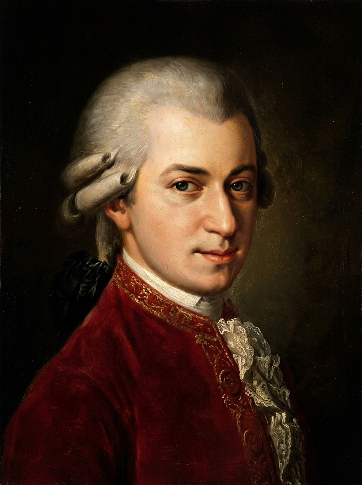

Mozart no componía buscando la aprobación del futuro; componía como quien respira, con una perfección técnica y una fluidez melódica inmaculadas que brotaban en su mente con la partitura ya terminada sin una sola tachadura. Elevó la ópera a un estudio psicológico de pasiones humanas y fijó el modelo definitivo del concierto para solista. Murió con apenas 35 años, dejando más de 600 obras cumbres.
Al morir prematuramente en 1791, las obras de Mozart quedaron en un estado de caos documental. En 1862, el botánico y mineralogista austríaco Ludwig von Köchel dedicó años a investigar manuscritos y cartas para establecer un catálogo cronológico estricto: desde el K. 1 (un minueto para teclado compuesto a los 5 años) hasta el K. 626 (el legendario Requiem inconcluso). El prefijo KV (Köchel-Verzeichnis) o simplemente K. es hoy el sello universal de autenticidad mozartiana.
Contexto Vital: Exhibido por su padre Leopold ante las cortes reales de París, Versalles, Londres, Viena y Roma, donde a los 14 años escuchó el 'Miserere' de Allegri y lo transcribió de memoria de oído tras una sola audición.
Contexto Vital: Atrapado como músico de corte bajo el despótico Arzobispo Hieronymus von Colloredo en Salzburgo, quien lo trataba como sirviente de cocina.
Contexto Vital: Matrimonio con Constanze Weber. Década febril de conciertos por suscripción, las grandes óperas con Lorenzo Da Ponte y el enigma final del encargo anónimo del Requiem.
Clasificación por género arquitectónico con número Köchel (K.), año y trascendencia:
| Catálogo | Título de la Obra | Tonalidad | Año | Aporte & Significado Conceptual |
|---|---|---|---|---|
| K. 183 | Sinfonía n.º 25 'Pequeña en Sol menor' | Sol menor | 1773 | Su primera sinfonía en modo menor, influida por el 'Sturm und Drang'; famosa apertura de la película Amadeus. |
| K. 385 | Sinfonía n.º 35 'Haffner' | Re mayor | 1782 | Brillantez aristocrática y energía luminosa concebida para la familia Haffner de Salzburgo. |
| K. 504 | Sinfonía n.º 38 'Praga' | Re mayor | 1786 | En tres movimientos (sin minué); contiene una introducción lenta de una complejidad armónica portentosa. |
| K. 550 | Sinfonía n.º 40 | Sol menor | 1788 | La cumbre de la tragedia lírica mozartiana; melancolía apasionada y dramatismo contenido. |
| K. 551 | Sinfonía n.º 41 'Júpiter' | Do mayor | 1788 | Su última sinfonía. El final culmina en una fuga quíntuple a 5 voces simultáneas: la cumbre del Clasicismo. |
| Catálogo | Título de la Obra | Tonalidad | Año | Aporte & Significado Conceptual |
|---|---|---|---|---|
| K. 466 | Concierto para piano n.º 20 | Re menor | 1785 | El concierto favorito de Beethoven (quien compuso sus cadencias). Tensión oscura y tormenta dramática. |
| K. 467 | Concierto para piano n.º 21 | Do mayor | 1785 | Contiene el célebre Andante en Fa mayor con cuerdas sordas y pulsación suspendida de ensueño. |
| K. 488 | Concierto para piano n.º 23 | La mayor | 1786 | Su movimiento lento (Adagio en Fa sostenido menor) es la única obra que Mozart escribió en esta tonalidad de llanto íntimo. |
| K. 622 | Concierto para clarinete | La mayor | 1791 | Escrito para Anton Stadler semanas antes de morir; elevó el clarinete a voz poética suprema. |
| Catálogo | Título de la Obra | Año | Aporte & Significado Conceptual |
|---|---|---|---|
| K. 492 | Las Bodas de Fígaro (Le nozze di Figaro) | 1786 | Comedia social revolucionaria con libreto de Da Ponte; la servidumbre burla la arrogancia de la nobleza. |
| K. 527 | Don Giovanni (Il dissoluto punito) | 1787 | Obra maestra universal: mezcla de farsa cómica y terror metafísico con la estatua del Comendador. |
| K. 620 | La Flauta Mágica (Die Zauberflöte) | 1791 | Singspiel popular en alemán con simbolismo masónico y melodías que van del aria acrobática de la Reina de la Noche a la canción folclórica de Papageno. |
| K. 626 | Requiem en Re menor | 1791 | La despedida trágica de Mozart en su lecho de muerte. El 'Lacrimosa' se interrumpe tras sus primeros 8 compases autógrafos. |